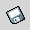

1.3. The Toolbar
The Toolbar contains many icons representative of some the more common operations a user may need to use. It is intended to provide fast access to these tools.
- New File.
Create a New file
- Open
Open an existing file.
-  Save
Save the current worksheet to disk.
Prints the current worksheet to a file or a printer.
- Print Setup
Displays a print preview of the current worksheet.
- Cut
Copy the cells in the current selection to the cut buffer and delete them.
- Copy
Copy the cells in the current selection to the cut buffer.
- Paste
Paste the contents of the cut buffer into the active cell.
- Undo
Undoes the last operation undertaken.
- Redo
This is the reverse of the undo operation, restoring its orginal state.
- Sum into the current cell
Sums the selected region in the selected cell.
- Sort Ascending
Sorts the selected region in ascending order based on the first column selected.
 Sort Descending
Sort Descending
Sorts the selected region in descending order based on the first column selected.
- Left justify..
Justify the contents of the cell to the left of the cell.
- Center
Center the content of the cells.
- Right Justify
Justify the content of the cells to the right side of the cells
- Bold
Change the style of the current cell to be bold, or un bold it if it is already bold.
- Italic
Change the style of the current cell to be italicized .
- Underline
Change the style of the current cell to be underlined.
- Line
Draw a line on the worksheet.
- Arrow
Draw a line with a arrow at one end. A pointer.
- Box
Draw a box onto the worksheet.
- Ellipse
Draw an ellipse or a circle on the worksheet.
- Money
Sets the format of the selected cells to be monetary.
- Percentage
Sets the format of the selected cells to be a percentage.
- Thousands separator
Sets the format of the selected cells to be a thousands separator.
- Add decimals
Increases the number of decimals shown in the currently selected cell.
- Remove decimals
Decreases the number of decimals in the currently selected cell.